Private Reserve · DIN controller · first draft
Settings
Not a fourth operating mode. A menu reached from Main, the same way as Calibration and Diagnostics. Header prefix is SET ·. Motion is idle while values are edited. Service holds the destructive actions: erase tables, restore defaults, clear calibration, clear station Wi-Fi, and reboot the controller.
SETTINGS LOCKED. Pending edits
stay in RAM. Retry when idle. A profile or travel change that invalidates
learned tables says so on its own screen and again on confirm.
1. Groups
Grouped by effect, not by NVS layout. The count on the right is how many values sit in each group. An amber pip marks a group that holds an unsaved change. Six rows fit. Service is the seventh row, off this shot until you TURN.
The web Settings tab paints that group list from /api/state, then keeps polling. Leaving jog to open Settings can write NVS on the same HTTP request as the first paint. The 3 s task watchdog used to miss those stretches, so the list appeared once and the controller stopped answering. Firmware now resets the watchdog around NVS, HTTP, and LCD draw, and it will not walk an unterminated NVS string forever.
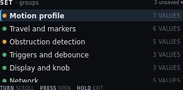
| On screen | Meaning |
|---|---|
SET · groups | Header left. Settings root. |
3 unsaved ▾ | Header right. Three staged field edits. The triangle means more groups below. |
Amber pip + highlight + Motion profile + 4 VALUES | Selected. Door pace, min duty, creep, jog. Amber when pace is staged (invalidates tables). |
Green pip + Travel and markers + 6 VALUES | Caps, probe tolerance, resync drift. Some rows open a locked derived page. |
Amber pip + Obstruction detection + 5 VALUES | Inrush skip, snug amps, envelope knobs. Amber because this group also holds a staged edit in this example. |
Green pip + Triggers and debounce + 3 VALUES | Bottle-key polarity and switch debounce. Saving polarity re-arms from the current sensor level. It does not command a move. |
Green pip + Display and knob + 3 VALUES | Display timeout (minutes, default 5), HOLD min ms, HOLD max ms. |
Green pip + Network + 5 VALUES | STA SSID, STA password, join timeout, AP name, AP password. Station password is web-only. Fallback AP password is shown in clear (default reserved). This row is clipped at the bottom of the panel. A 4-byte NVS layout shift used to advertise SoftAP as ateReserve (the tail of PrivateReserve). Boot now restores the default name and password when that suffix is all that remains, then rewrites NVS. |
Service and defaults + 5 ACTIONS (off-screen) | Seventh group. TURN to it. Destructive. Figure 11. Clear station Wi-Fi is the fourth action; Reboot controller is the fifth. PRESS twice. |
TURN scroll | Move the highlight. Window the list. |
PRESS open | Enter the highlighted group. |
HOLD exit | Return to Main. Staged edits stay in RAM until Review saves or discards them. |
2. Motion profile group
A value list, not a form. Pending edits show the new value in amber next to the stored one. Decelerate is the seventh row, off this shot.
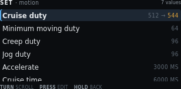
| On screen | Meaning |
|---|---|
SET · motion | Header left. |
7 values | Header right. Count in this group. |
Highlight + Door pace | Selected. Gentle…Brisk slider, speed-vs-throw graph, About X s and peak g. Changing pace invalidates both learned tables. |
Minimum moving duty · 64 | Floor while the profile is moving. Below this the motor may not break away. |
Creep duty · 96 | Duty for marker seeks, snug, and short calibration moves. |
Jog duty · 96 | 10-bit duty for both diagnostic jog pages. Those pages edit it as 5–25%. Time jog also edits step as 200–1000 ms. Position jog edits step as 16–512 counts. |
Accelerate · 3000 MS | Time to climb from moving floor to cruise. Changing it invalidates tables. |
Cruise time · 6000 MS | Time at cruise duty. Changing it invalidates tables. Clipped at the bottom of this shot. |
Decelerate · 3000 MS (off-screen) | Seventh value. TURN to it. Time to drop from cruise to creep. Changing it invalidates tables. |
TURN scroll · PRESS edit · HOLD back | Move, open the edit screen, or return to groups. |
3. Edit — cruise duty
The sharpest setting on the controller. Range, default, and step are on the panel. The consequence line is stated before the edit is accepted.
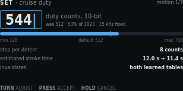
| On screen | Meaning |
|---|---|
SET · cruise duty | Header left. Field name. |
motion 1/7 | Header right. First field in the motion group. |
544 with caret, blue box | Pending value. TURN changes it. |
duty counts, 10-bit | Unit. Same 0–1023 scale as the PWM diagnostic. |
was 512 · 53% of 1023 · 15 kHz fixed | Stored value, percent of full scale, and the compile-time carrier. 15 kHz is not editable. |
| Blue fill on the range bar, white tick | Fill is the pending value. The tick is the default (512). |
min 128 · default 512 · max 768 | Allowed range and factory default. Max is below 1023 so cruise cannot sit on the rail. |
step per detent · 8 counts | How much TURN changes the pending value. |
estimated stroke time · 12.0 s → 11.4 s | Advisory. Faster cruise shortens the move. Not a safety limit. |
invalidates · both learned tables (amber) | Accepting this drop both envelopes to stale. Until a relearn, trip is the 2.50 A ceiling only. |
TURN adjust · PRESS accept · HOLD cancel | Change, keep the pending value (then confirm), or restore 512. |
4. Confirm — consequence of the edit
Shown when an accepted edit invalidates learned data. Dropping to the hard ceiling is a real reduction in protection, so it is spelled out and needs a second press.
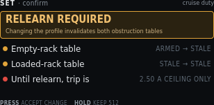
| On screen | Meaning |
|---|---|
SET · confirm | Header left. |
cruise duty | Header right. Which field triggered this gate. |
RELEARN REQUIRED | Amber banner title. |
Changing the profile invalidates both obstruction tables | Banner detail. Door pace does this (same as the old cruise/accel/decel knobs). |
Amber pip + Empty-rack table + ARMED → STALE | Empty envelope is in service now. After this save it will not be. |
Amber pip + Loaded-rack table + STALE → STALE | Already stale. Stays stale. |
Red pip + Until relearn, trip is + 2.50 A CEILING ONLY | Protection drops to the hard ceiling. Main still runs, with less discrimination. |
PRESS accept change | Keep the pending cruise duty. Tables mark stale on Review save, not on this press alone. |
HOLD keep 512 | Drop the pending edit. Stored 512 stays. |
5. Edit — display timeout
A benign value, shown for contrast. No consequence line, no confirm step. Units are minutes because that is how an operator thinks about a screen going dark.
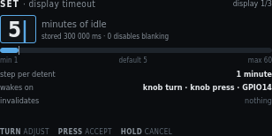
| On screen | Meaning |
|---|---|
SET · display timeout | Header left. |
display 1/3 | Header right. First of three Display and knob fields. |
5 with caret | Pending minutes of idle before blanking. |
minutes of idle | Unit on the panel. Firmware stores milliseconds. |
stored 300 000 ms · 0 disables blanking | NVS value for 5 minutes. Zero means the panel stays on. |
Range bar, min 1 · default 5 · max 60 | Allowed minutes. Default matches the factory 300000 ms. |
step per detent · 1 minute | TURN step. |
wakes on · knob turn · knob press · GPIO14 | What resets the timer and what wakes a blanked panel. Web commands also reset it. Wake returns to Main. |
invalidates · nothing | This field does not stale calibration or tables. Dim on purpose. |
TURN adjust · PRESS accept · HOLD cancel | Same edit gestures as cruise duty. No confirm step after PRESS. |
6. Edit — trigger polarity
An enumerated choice, so it is a two-item pick list rather than a number. Saving re-arms the trigger from the level the sensor is reading now, which is why that line is on the screen.
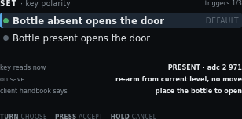
| On screen | Meaning |
|---|---|
SET · key polarity | Header left. |
triggers 1/3 | Header right. First of three Triggers and debounce fields. |
Green pip + highlight + Bottle absent opens the door + DEFAULT | Selected choice. Handbook polarity. Place the bottle to close. |
Grey pip + Bottle present opens the door | Inverted polarity. Use only if this cabinet is wired that way. |
key reads now · PRESENT · adc 2 971 | Live cooked state and raw ADC, so you can see what re-arm will start from. |
on save · re-arm from current level, no move | Firmware adopts the new polarity from the present reading. It does not command open or close. |
client handbook says · place the bottle to open (amber) | Published client instruction. Compare it with the selected row before you accept. Absent-opens means remove the bottle to open. Present-opens means place the bottle to open. |
TURN choose · PRESS accept · HOLD cancel | Move the highlight, stage the choice, or keep the previous polarity. |
7. Network group
Text entry through one knob is a trap, so the LCD shows the values and points at the web page. The station password is masked. The fallback AP password is shown in clear (default reserved) so a phone can join PrivateReserve before /wifi exists. Then open http://192.168.4.1/. The web View of this screen adds a clickable Set SSID and password link, the same idea as Docs adding Open GitHub page. That form is hosted by the controller at /wifi and is not drawn on the LCD. Scan takes a few seconds. The page stays live. The screen states that the web interface has no login. To drop the stored STA network, do not edit this list: use Service → Clear station Wi-Fi, then reboot.
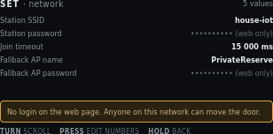
| On screen | Meaning |
|---|---|
SET · network | Header left. |
5 values | Header right. |
Station SSID · house-iot | Stored STA network name. Shown in clear. |
Station password · ******** (web only) | Masked. The LCD cannot edit it. On the web View of this screen, open Set SSID and password. That is a separate page at /wifi on the controller, with a phone keyboard and a Scan list. Scan takes a few seconds; the page stays live. It is not on the LCD. |
Join timeout · 15 000 ms | How long STA join may run before SoftAP starts. This is a number. PRESS can edit it from the knob. |
Fallback AP name · PrivateReserve | SoftAP SSID when STA is empty or join fails. Default name is PrivateReserve. If NVS was shifted by four bytes, this used to load as ateReserve; boot restores the default and rewrites the blob. |
Fallback AP password · reserved | Shown in clear. You need this before the web page exists. Default is reserved. Empty means an open AP. Change it later on /wifi. |
Amber line: No login on the web page. Anyone on this network can move the door. | HTTP is port 80 with no application login. Do not expose that LAN. |
TURN scroll | Move among rows. |
PRESS edit numbers | Edit join timeout (and other numeric fields). SSID and passwords do not open a knob editor. On the web, a blue Set SSID and password link opens /wifi. To drop the stored STA network, use Service → Clear station Wi-Fi. |
HOLD back | Return to groups. |
8. Derived and locked values
Read-only by design. Counts-per-inch came from a measured span and a typed stroke. The ceiling and the PWM carrier are hardware facts. Showing them with a lock stops somebody hunting for an edit screen.
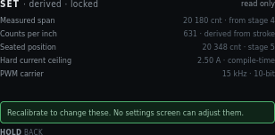
| On screen | Meaning |
|---|---|
SET · derived · locked | Header left. |
read only | Header right. No edit affordance. |
Measured span · 20 180 cnt · from stage 4 | Close-marker actuation minus origin. Dim because it is not editable here. |
Counts per inch · 631 · derived from stroke | Display scale only. Never a seek cap. |
Seated position · 20 348 cnt · stage 5 | Closed seated counts. |
Hard current ceiling · 2.50 A · compile-time | Not an NVS setting. Firmware constant. |
PWM carrier · 15 kHz · 10-bit | Not an NVS setting. Hardware/firmware fact. |
Green line: Recalibrate to change these. No settings screen can adjust them. | Span and seated change only through Calibration. Ceiling and carrier do not change in the field. |
HOLD back | Return. There is no PRESS. |
9. Review and save pending changes
The single write point, mirroring Calibration review. It lists every staged change with old and new value. It will not write while the motor is running.
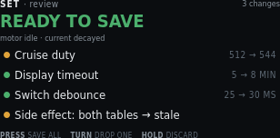
| On screen | Meaning |
|---|---|
SET · review | Header left. |
3 changes | Header right. Three field writes in this set. The side-effect row is extra. |
READY TO SAVE (green) | Hero. Motor idle, current decayed. |
motor idle · current decayed | Write precondition. Same rule as Calibration review. |
Amber pip + Cruise duty + 512 → 544 | First staged write. Amber because it invalidates tables. |
Green pip + Display timeout + 5 → 8 MIN | Second staged write. Benign. |
Green pip + Switch debounce + 25 → 30 MS | Third staged write. |
Amber pip + Side effect: both tables → stale | Not a field you typed. Consequence of cruise duty. Named so it cannot be missed. |
PRESS save all | One NVS write of the remaining rows. |
TURN drop one | Remove the highlighted row from this set. It stays at the stored value. |
HOLD discard | Drop the whole set. Stored NVS is unchanged. |
10. Edit blocked — motor busy
A defined refusal, not an error. Configuration cannot change under a running profile or an active calibration stage. The screen names which one is holding the lock.
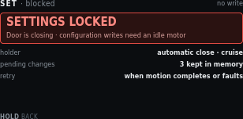
| On screen | Meaning |
|---|---|
SET · blocked | Header left. |
no write | Header right. This screen will not commit NVS. |
SETTINGS LOCKED | Red banner title. |
Door is closing · configuration writes need an idle motor | Banner detail. Why, and the rule. |
holder · automatic close · cruise | Which activity owns the motor. Could also name a calibration or jog step. |
pending changes · 3 kept in memory | Staged edits survive. They are not discarded by the lock. |
retry · when motion completes or faults | Open Settings again after idle. Review can then save. |
HOLD back | Leave. No PRESS. There is nothing to accept. |
11. Service and defaults
Destructive actions live together, away from ordinary edits. Each states its blast radius. PRESS confirm twice. Motor must be idle. Full factory erase is USB-only. It is not on this menu.
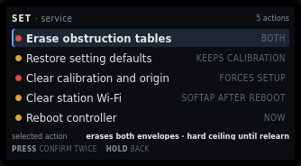
| On screen | Meaning |
|---|---|
SET · service | Header left. |
5 actions | Header right. Not values. Actions. |
Red pip + highlight + Erase obstruction tables + BOTH | Selected. Drops empty and loaded envelopes. Origin stays. Hard ceiling until relearn. |
Amber pip + Restore setting defaults + KEEPS CALIBRATION | Settings struct reset. Keeps calibration. Keeps Wi-Fi strings. |
Red pip + Clear calibration and origin + FORCES SETUP | Main shows Needs Setup. Automatic motion blocks until Calibration runs again. |
Amber pip + Clear station Wi-Fi + SOFTAP AFTER REBOOT | Zeros stored STA SSID and password. Fallback AP name and password stay. The live STA session stays until reboot. Next boot skips STA and starts SoftAP. |
Amber pip + Reboot controller + NOW | Stops PWM and resets the ESP32. Same as a power cycle. Motion does not resume. PRESS twice, motor idle. |
selected action · erases both envelopes · hard ceiling until relearn | Blast radius of the highlighted row, restated under the list. |
PRESS confirm twice | First PRESS arms. Second PRESS runs. HOLD at either step aborts. TURN after the first PRESS cancels the arm. |
HOLD back | Return to groups without running an action. |
12. Station Wi-Fi cleared
Shown after Clear station Wi-Fi runs. The write is already in NVS. PRESS reboots now so SoftAP can start. HOLD returns to Settings if you want to reboot later from Service.
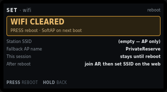
| On screen | Meaning |
|---|---|
SET · wifi | Header left. |
reboot | Header right. The change is stored. SoftAP starts on the next boot. |
WIFI CLEARED | Warn banner. Station SSID and password are empty. |
PRESS reboot · SoftAP on next boot | This session can stay on the old STA address until you PRESS or power-cycle. |
Station SSID · (empty - AP only) | Boot will skip STA join. |
Fallback AP name · PrivateReserve | Unchanged. Join this AP after reboot, then set a new SSID on the web. |
Join password · reserved | WPA2 PSK for that AP. Type it on the phone. Shown here because the web page is not reachable until you join. |
After reboot · join AP, then set SSID on the web | SoftAP starts. Then open http://192.168.4.1/wifi. The live STA link, if any, stays until this reboot. |
PRESS reboot | Stops PWM and resets the ESP32. One PRESS. Motor must be idle. |
HOLD back | Return to Settings groups without rebooting. |